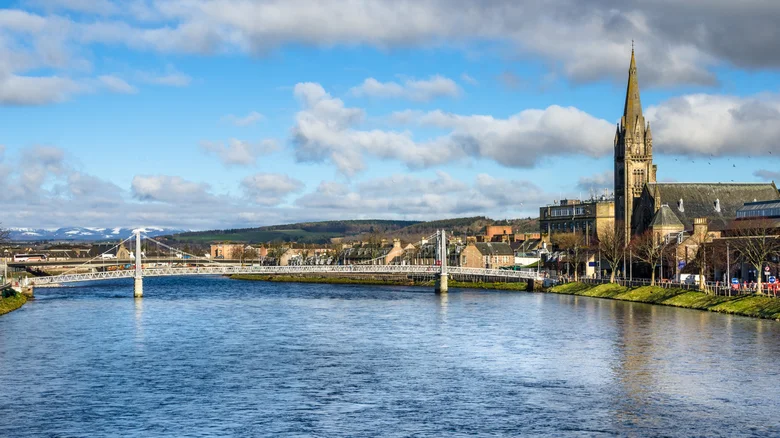

Scotland: Inverness

While big celebrations take place in Edinburgh and Glasgow, the idyllic Highlands capital of Inverness is the place to be for a small-town Scottish Christmas. The town kicks off the holiday season with a torchlight parade and lighting ceremony at the annual Christmas Lights Switch-On. Whin Park hosts a winter festival where visitors can meet Santa and his reindeer, while the Victorian Market offers shopping. Head to Eden Court to catch a traditional British panto (short for pantomime) performance. Inverness also hosts a family-friendly Highland Hogmanay Fling with dancing, fireworks, and more.
Eden Court Christmas Fairs
15th – 17th November
29th November – 1st December
The Eden Court Christmas Fairs return to Eden Court over two exciting weekends. There will be several stalls featuring crafts and gifts. Plus, street food and refreshments will be available. The perfect way to kick off the festive season in Inverness.
Elf on the Shelf Hunt
30th November 10 am - 3 pm
The Elf on the Shelf Hunt in the Victorian Market is an annual event for all the family. Visit the market, let the parents get the shopping started while the kids scale the shopping centre looking for Santa’s naughty elves and noting all their names – to hopefully win a prize. Pick up an entry form from Elf HQ within the market! This year’s event is yet to be confirmed.
Eden Court panto
4th December – 5th January
What’s a festive countdown without mentioning the annual Christmas pantomime? Once again, the biggest theatrical festival of the year will be returning to the Highlands this festive season. So if you are spending this Christmas in Inverness, head on down to see Jack and the Beanstalk at Eden Court Theatre. In true family panto style, enjoy the dastardly villain, hapless comic, hilarious damsel in distress, fabulous songs, outrageous costumes and loads and loads of slapstick fun!
Kingsmills Christmas parties
Throughout December
What better way to celebrate the festive season than with great company, fabulous food and drink and a party atmosphere? Join us at The Kingsmills and celebrate with friends and family. Choose from festive breaks, lunches, brunches, afternoon teas, dinners, party nights and more!
Christmas shopping
Throughout the season
Those perfect pressies aren’t going to buy themselves. That’s right. Christmas shopping in Inverness is one of our favourite things to look forward to this festive season. From top fashion brands at Eastgate Shopping Centre and stocking fillers from the newly renovated Victorian Market, to our own gift vouchers and special offers, wrap up this Christmas in Inverness with some much-needed retail therapy.
Kingsmills Hogmanay Dinner
31st December 2024
If you want to ring in the bells with style this year, celebrate with The Kingsmills’ very own Hogmanay Dinner in the Conservatory & Lounge. Enjoy a sumptuous 3-course dinner, followed by hooley dancing into the wee sma’ hours, is there a better way to kick off 2025?
Highland Hogmanay
Once Christmas is over, we’ve had our fill of turkey and stuffing, it’s time to brace ourselves for the new year celebrations. At the end of December, Inverness is gearing up to welcome in the new year. With amazing bands on throughout the city, fabulous food and drinks and a toast to the bells. This year’s main event is hoped to take place on Church Street with many business coming together!